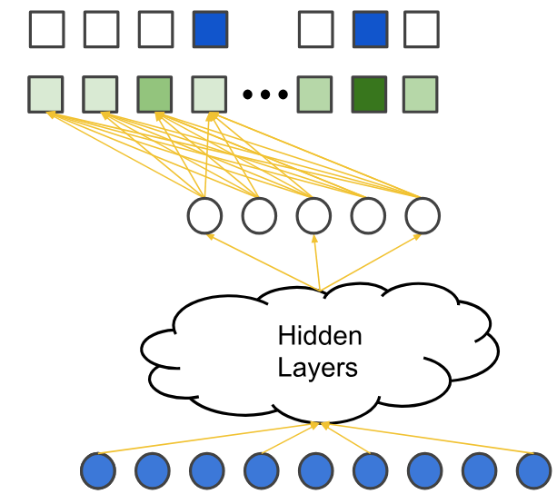
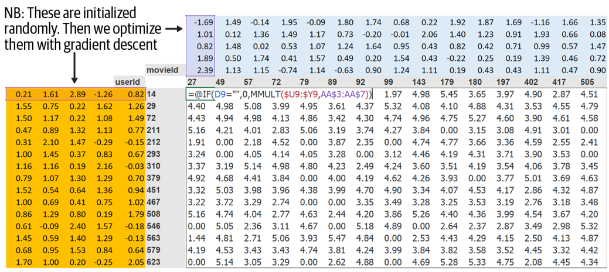

Objectives
In this blog, we are going to dive into collaborative filtering which is a part of recommendation algorithms used in Netflix. Netflix may not know these particular properties of the films you watched, but it would be able to see that other people that watched the same movies could watch other movies that you are not watching yet. By applying this technique, Netflix can recommend us the contents of the movies that we have not watched before but relevant to what we liked, which the others too.
Collaborative Filtering is a recommendation system that recommends items to users based on how other users with similar preferences and behaviors have interacted with the same item. It is based on the principle that similar users share similar interests and behaviors. Different to content-based filtering, which recommends items based on the features of the items themselves, collaborative filtering relies on the collective behavior of users to make recommendations.
The key idea of content-based filtering is based on latent factors which decides what kinds of movies you want to watch. # How does it work? To recommend items to users based on their past behavior and preferences, collaborative filtering first needs to find similar users. It does this by analyzing user-item interactions and identifying patterns in user behavior. Then, it predicts the ratings of items that are not yet rated by the user. To do so, we need to deal with the following questions:
How to measure user similarity?
Given that the users behaviors are similar, how to give the rating for an item based on the ratings of others users?
How to measure the accuracy of the rating since we don’t have the ground truth for the unseen items?
To deal with two former questions, Collaborative filtering uses techniques such as user-item interactions1, similarity measures2, and matrix factorization3.
To measure the accuracy of the rating, we can use metrics such as root mean square error (RMSE) or mean absolute error (MAE) to evaluate the performance of the recommendation system. RMSE predict ratings for a test dataset of user-item pairs whose rating values are already known. The difference between the known value and the predicted value would be the error. Square all the error values for the test set, find the average (or mean), and then take the square root of that average to get the RMSE. On the other hand, MAE measures the average magnitude of the errors in a set of predictions, without considering their direction. It’s the average over the test sample of the absolute differences between prediction and actual observation where all individual differences have equal weight.
Collaborative Filtering Techniques
There are several techniques in the family of collaborative filtering, which have been widely discussed:
Memory-based method
Model-based method
Memory-based method
Memory-based methods are based on statistical techniques to find similar users or items. It would find the rating \(\mathbf{R}\) for user \(\mathbf{U}\) and item \(\mathbf{I}\) by:
Finding similar users as user \(\mathbf{U}\) based on their ratings for item \(\mathbf{I}\) that they have rated.
Calculate rating \(\mathbf{R}\) based as a weighted sum of the ratings given by similar users to item \(\mathbf{I}\).
Finding similar users with similarity scores
For example, there are 4 user \(u_1, u_2, u_3, u_4\) \(\in \mathbf{U}\) have rated two movies \(i_1, i_2\) \(\in \mathbf{I}\) as follows:
To define if the preferences of two users are similar, we can use similarity scores between users or items. The most common similarity measures used in memory-based methods are:
Cosine similarity: Measures the cosine of the angle between two vectors in a multi-dimensional space. It is commonly used to measure the similarity between users or items based on their ratings.
Pearson correlation: Measures the linear correlation between two variables. It is often used to find users with similar tastes by comparing their rating patterns.
Jaccard similarity: Measures the similarity between two sets by comparing the size of their intersection to the size of their union. It is useful for finding similar items based on user co-occurrence.
To calculate similarity using Cosine similarity, we need a function that returns a higher similarity or smaller distance for a lower angle and a lower similarity or larger distance for a higher angle. The cosine of an angle is a function that decreases from 1 to -1 as the angle increases from 0 to 180.
Centered Cosine Similarity
In practice, we center the ratings by subtracting the mean rating of each user from their ratings. This helps to account for individual user biases (e.g., some users may rate all movies higher or lower than others, but they are considered as having the same preferences). The centered cosine similarity is then calculated using these mean-centered ratings. This approach is also used when there are a lot of missing values in the user rating vectors, and we need to place a common value to fill up the missing values.
Calculate Rating
There are multiple way to predict the rating of an item \(\mathbf{I}\) for a user \(\mathbf{U}\), one simple way is to use the average of the ratings for that item given by similar users. The formula for calculating the predicted rating \(\hat{R}_{U,I}\) for user \(\mathbf{U}\) and item \(\mathbf{I}\) is: \[ \mathbf{R_U} = \sum_{u =1}^n \frac{R_{u,I}}{n} \] This formula shows that the average rating given by the n similar users is equal to the sum of the ratings given by them divided by the number of similar users, which is n.
To weight higher score for the users that are more similar to user \(u\), we can use the following formula:
\[ \mathbf{R_U} = \frac{\sum_{u =1}^n R_{u,I}*S_U}{\sum_{u =1}^n S_U} \] where the similar factor \(S_u\), which would act as weights, should be the inverse of the distance discussed above because less distance implies higher similarity. For example, you can subtract the cosine distance from 1 to get cosine similarity.
user-user vs item-item collaborative filtering
The techniques, where the rating matrix is used to find similar users based on the ratings they give, is called user-based or user-user collaborative filtering. If you use the rating matrix to find similar items based on the ratings given to them by users, then the approach is called item-based or item-item collaborative filtering, which is developped by Amazon.
Model-based method
The model-based collaborative filtering method learns a model from the user-item interactions and uses this model to make predictions. This approach can capture complex patterns in the data and is often more scalable than memory-based methods. Some common model-based techniques include:
Matrix Factorization: This technique decomposes the user-item interaction matrix into lower-dimensional matrices representing latent factors for users and items. The most popular matrix factorization method is Singular Value Decomposition (SVD).
Deep Learning: Neural networks can be used to learn complex representations of users and items. Techniques like autoencoders and recurrent neural networks (RNNs) have been applied to collaborative filtering tasks.
Matrix Factorization
When we have a large user-item matrix with many missing values, matrix factorization techniques can help us fill in the gaps. The idea is to factor the original matrix into two lower-dimensional matrices: one representing users and the other representing items. This allows us to capture latent factors that explain the observed ratings.
As an example Figure 1, a user-item matrix \(A \in \mathbb{R}^{m \times n}\) can be factorized into two lower-dimensional matrices (embedding vectors) \(U \in \mathbb{R}^{m \times k}\) and \(V \in \mathbb{R}^{k \times n}\), where \(k\) is the number of features or latent factors, \(m\) is the number of users, and \(n\) is the number of items.
Using embeddings for users and items, we can represent each user or item as a dense vector in a continuous space, capturing their latent characteristics via approximating the original user-item matrix \(A\) as follows: \(A=U\times V^T\)
To do that, we need to learn the user and item embeddings from the data. It is achieved by minimizing the difference between the original matrix and the product of the two lower-dimensional matrices. \[ \min_{U,V} ||A - U \cdot V^T||_F^2 \] This corresponds to minimizing the squared Frobenius distance between the original matrix and the reconstructed matrix.
Instead of using techniques like Singular Value Decomposition (SVD) to solve the problem, which is not favorable when matrix \(A\) is sparse, stochastic gradient descent (SGD) is a more feasible candidate.
Deep-Learning method
Some disadvantages of matrix factorization for collaborative filtering are:
- Relevancy of recommended item: By using dot product as a similarity measure, popular items are generally recommended for everyone, regardless their different preferences and behavior.
- Latents features are learned within user-item training set, and can not be captured beyond that.
Deep neural network can deal with these problems by incorporating item features and user features.

Figure Figure 2 shows a deep neural network architecture for collaborative filtering. The input layer consists of user and item features, which are then passed through several hidden layers to learn complex representations. The output layer use soft-max to illustrate the probability of a user interacting with an item.
Build a Collaborative Filtering with Python
In this section, we will use DNN to build a collaborative filtering model. It includes 3 steps:
Initialize random parameters of latent features for each user and item.
Calculate the prediction by taking the dot product of user and item embeddings to see how much an user likes/dislike an item.
Update the user and item embeddings based on the prediction error using backpropagation of Mean Squared Loss.

Data preparation
Indeed, we can not have access to Netflix’s entire dataset of movie watching history, but there is a great dataset that we can yous, called MovieLen which contains tens millions of movies ranking.
Model Training
To calculate the result of each user-item interaction, we look for the index of the item in the item latent factor matrix and the index of user in the user latent factor matrix. Then, we perform the dot product between the latent vectors.
Furthermore, to capture user positive/negative feedback in their recommendations than others, and some movies are just plain better or worse than others, we can add bias terms for users and items.
Code
class DotProductBias(Module):
def __init__(self, n_users, n_movies, n_factors, y_range=(0,5.5)):
self.user_factors = Embedding(n_users, n_factors)
self.user_bias = Embedding(n_users, 1)
self.movie_factors = Embedding(n_movies, n_factors)
self.movie_bias = Embedding(n_movies, 1)
self.y_range = y_range
def forward(self, x):
users = self.user_factors(x[:,0])
movies = self.movie_factors(x[:,1])
res = (users * movies).sum(dim=1, keepdim=True)
res += self.user_bias(x[:,0]) + self.movie_bias(x[:,1])
return sigmoid_range(res, *self.y_range)or
Code
class CollabNN(Module):
def __init__(self, user_sz, item_sz, y_range=(0,5.5), n_act=100):
self.user_factors = Embedding(*user_sz)
self.item_factors = Embedding(*item_sz)
self.layers = nn.Sequential(
nn.Linear(user_sz[1]+item_sz[1], n_act),
nn.ReLU(),
nn.Linear(n_act, 1))
self.y_range = y_range
def forward(self, x):
embs = self.user_factors(x[:,0]),self.item_factors(x[:,1])
x = self.layers(torch.cat(embs, dim=1))
return sigmoid_range(x, *self.y_range)
embs = get_emb_sz(dls)
model = CollabNN(*embs)Then, we can train the model by first creating data batches using DataLoader. We will use the CollabDataLoaders class from FastAI to create our data loaders.
Code
dls = CollabDataLoaders.from_df(ratings, item_name='title', bs=64)
n_users = len(dls.classes['user'])
n_movies = len(dls.classes['title'])Let try to train the model which is based on DotProductBias in 5 epochs with learning rate of 0.005.
Code
model = DotProductBias(n_users, n_movies, n_factors=50)
learn = Learner(dls, model, loss_func=MSELossFlat())
learn.fit_one_cycle(5, 5e-3)| epoch | train_loss | valid_loss | time |
|---|---|---|---|
| 0 | 0.832946 | 0.948861 | 00:04 |
| 1 | 0.584821 | 0.928112 | 00:04 |
| 2 | 0.407661 | 0.949344 | 00:04 |
| 3 | 0.320535 | 0.960816 | 00:04 |
| 4 | 0.288325 | 0.960388 | 00:04 |
As we can see from the training results, while training loss reduces with each epoch, the validation loss increases, indicating overfitting. It is obvious that the model is not generalizing well to unseen data. To tackle with this issue, we can apply regularization techniques such as weight decay.
Regularization Techniques
- Weight Decay: This technique adds a penalty on the size of the weights to the loss function, discouraging overly complex models.
- Dropout: Randomly dropping units during training to prevent co-adaptation.
- Early Stopping: Monitoring validation loss and stopping training when it starts to increase.
In Weight Decay, limiting our weights from growing too much is going to hinder the training of the model, but it will yield a state where it generalizes better. The updates of parameters are as follows: parameters.grad += wd * 2 * parameter
Code
model = DotProductBias(n_users, n_movies, n_factors=50)
learn = Learner(dls, model, loss_func=MSELossFlat())
learn.fit_one_cycle(5, 5e-3, wd=0.1)| epoch | train_loss | valid_loss | time |
|---|---|---|---|
| 0 | 0.905391 | 0.980552 | 00:04 |
| 1 | 0.680553 | 0.903055 | 00:04 |
| 2 | 0.508638 | 0.884937 | 00:04 |
| 3 | 0.458852 | 0.867883 | 00:04 |
| 4 | 0.449187 | 0.862520 | 00:04 |
As we can see, the training is much better since overfitting has been reduced.
Model Testing
Once the model has been trained, we can use that model to find the similarity between movies. For example, We can use this to find the most similar movie to Silence of the Lambs using cosine similarity:
Code
learn = collab_learner(dls, n_factors=50, y_range=(0, 5.5))
movie_factors = learn.model.i_weight.weight
idx = dls.classes['title'].o2i['Silence of the Lambs, The (1991)']
distances = nn.CosineSimilarity(dim=1)(movie_factors, movie_factors[idx][None])
idx = distances.argsort(descending=True)[1]
dls.classes['title'][idx]'Ayn Rand: A Sense of Life (1997)'Conclusion
In this blog, we explored collaborative filtering as a powerful recommendation system technique used by platforms like Netflix to suggest relevant content to users based on similar user preferences.
Key points
Collaborative filtering relies on user-item interactions to make recommendations.
Matrix factorization techniques, such as SVD and neural collaborative filtering, can effectively capture latent factors.
Regularization techniques are essential to prevent overfitting and improve model generalization.
Technical Insights
Key Technical Learnings
- Regularization Impact: Weight decay (0.1) dramatically improved validation performance, reducing overfitting in the collaborative filtering model.
- Model Architecture: The use of a neural network with embedding layers allowed for better representation of users and items, capturing complex interactions.
- Similarity Computation: Leveraging cosine similarity enabled effective identification of similar items, enhancing the recommendation process.
Future Directions
Hybrid Approaches: Combining collaborative filtering with content-based methods could enhance recommendation quality
Advanced Neural Architectures: Exploring transformer-based models for capturing sequential patterns in user behavior
Cold Start Problem: Collaborative filtering can lead to some problems like cold start for new items that are added to the list. Until someone rates them, they don’t get recommended.
Final Thoughts
Collaborative filtering continues to evolve with deep learning approaches that capture increasingly complex patterns in user-item interactions. For practical applications, the balance between model complexity, computational efficiency, and recommendation quality remains crucial. As recommendation systems become more integrated into our digital experiences, the techniques explored in this blog will continue to play a vital role in connecting users with relevant content.
To know more about this, Here are the papers for further reading on collaborative filtering and other recommendation algorithms:
Item Based Collaborative Filtering Recommendation Algorithms (Sarwar et al., 2001)4
Matrix Factorization Techniques for Recommender Systems (Koren et al., 2009)5
Using collaborative filtering to weave an information tapestry(Goldberg et al., 1992)6
Footnotes
Herlocker, J. L., et al. (2004). Evaluating collaborative filtering recommender systems. ACM Transactions on Information Systems, 22(1), 5-53.↩︎
Bobadilla, J., et al. (2013). Recommender systems survey. Knowledge-based systems, 46, 109-132.↩︎
Koren, Y., Bell, R., & Volinsky, C. (2009). Matrix factorization techniques for recommender systems. Computer, 42(8), 30-37.↩︎
Sarwar, B., Karypis, G., Konstan, J., & Riedl, J. (2001). Item-based collaborative filtering recommendation algorithms. In Proceedings of the 10th international conference on World Wide Web (pp. 285-295).↩︎
Koren, Y., Bell, R., & Volinsky, C. (2009). Matrix factorization techniques for recommender systems. Computer, 42(8), 30-37.↩︎
Goldberg, D., Nichols, D., Oki, B. M., & Terry, D. (1992). Using collaborative filtering to weave an information tapestry. Communications of the ACM, 35(12), 61-70.↩︎